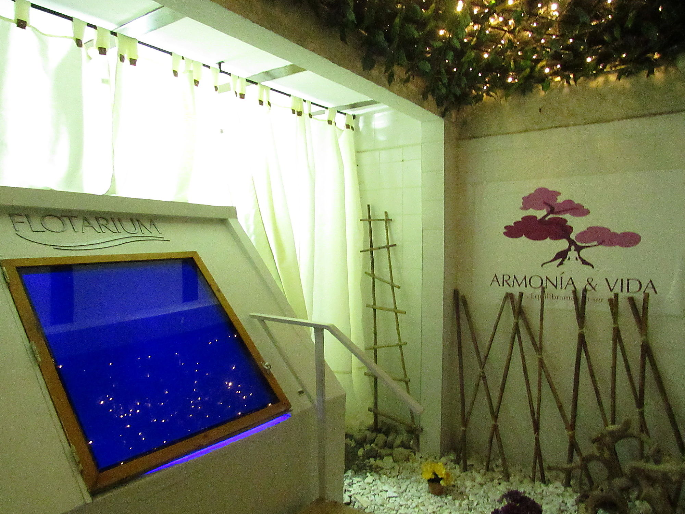

header


¿Qué es Flotarium?
Es un tanque de privación sensorial que contiene una solución de agua y sulfato de magnesio (sal Epsom) con
una cantidad precisa para crear una densidad similar a la del mar muerto, permitiendo que el cuerpo flote sin
menor esfuerzo y disfrutar de la sensación de ingravidez.
Para aumentar la sensación de tranquilidad y bienestar, nuestro tanque aporta musicoterapia, cromoterapia,
aromaterapia y Ozono.

¿Cómo funciona?
Es un tanque de privación sensorial que contiene una solución de agua y sulfato de magnesio (sal Epsom)
con una cantidad precisa para crear una densidad similar a la del mar muerto, permitiendo que el cuerpo
flote sin menor esfuerzo y disfrutar de la sensación de ingravidez. Para aumentar la sensación de
tranquilidad
y bienestar, nuestro tanque aporta musicoterapia, cromoterapia, aromaterapia y Ozono.

¿Cuál es la experiencia?
Nuestro centro terapéutico Armonía y Vida se encuentra ubicado en el sector de la Pradera en Dosquebradas, allí,
hemos construido el primer tanque de privación
sensorial de la región para ofrecerte la experiencia única de Flotarium y sus beneficios.
Agenda tu cita y permítele a tu cuerpo y a tu mente entrar en un estado de relajación profunda para encontrar una calma duradera, todo esto en una sesión de 60 minutos en los que flotarás en nuestro tanque de privación sensorial al igual que lo harías en el mar muerto.
No necesitas traer nada, dispondrás de toallas, shampoo, gel, tapones para los oídos, secadores y una botella de agua, todo incluído en nuestro servicio.
Aprenderás de la experiencia de la mano de nuestro personal experto de Armonía y Vida.
Agenda tu cita y permítele a tu cuerpo y a tu mente entrar en un estado de relajación profunda para encontrar una calma duradera, todo esto en una sesión de 60 minutos en los que flotarás en nuestro tanque de privación sensorial al igual que lo harías en el mar muerto.
No necesitas traer nada, dispondrás de toallas, shampoo, gel, tapones para los oídos, secadores y una botella de agua, todo incluído en nuestro servicio.
Aprenderás de la experiencia de la mano de nuestro personal experto de Armonía y Vida.
benefits
schedule